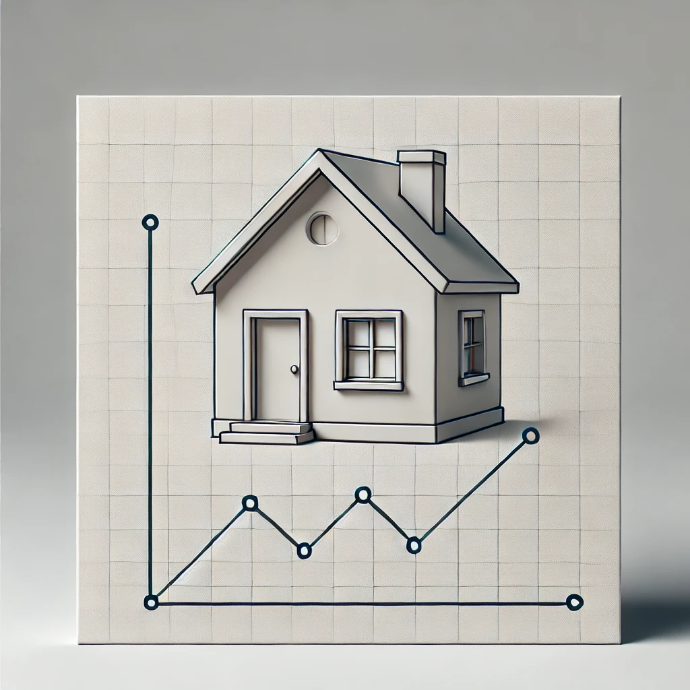

House Price Analysis Page
• Developed a machine learning model using Python to predict house prices in Bengaluru, leveraging features like location, area type, number of bedrooms, bathrooms, and total square footage.
• Utilized Python libraries such as pandas, NumPy, Matplotlib, and Seaborn for data analysis, visualization, and data cleaning to ensure the model was built with structured and accurate data.
• Conducted data preprocessing, including handling mixed data types and units, to standardize the total_sqft feature, ensuring consistent input for the machine learning model.
• Implemented outlier detection and removal techniques to improve model accuracy by identifying homes with unrealistic price-to-square-foot ratios and eliminating them from the dataset.
• Applied scatter plot visualizations to compare house prices across different property types, such as 2 BHK and 3 BHK, in similar locations. Identified and removed data points where larger properties were priced lower than smaller ones to enhance the model’s accuracy.
• Utilized various regression methods, such as linear regression, to improve the model's performance, achieving an accuracy rate of approximately 89.21% and improving price prediction reliability by 20%.
• Reduced model training time by 10% through efficient feature selection and data preprocessing techniques.
• Split the dataset into training and testing sets using the train_test_split() function from the scikit-learn library, achieving a reasonable prediction accuracy with room for improvement through feature engineering and additional data.
• The project demonstrated strong performance but indicated potential for further improvement by adding more data and refining the treatment of missing and outlier values.